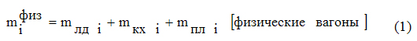
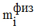
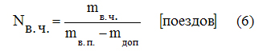
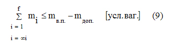
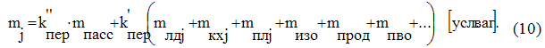
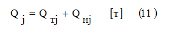
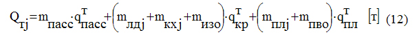
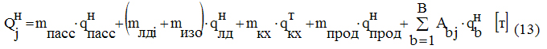

HARBY BÖLÜMI DEMIR ÝOL ULAGYNDA DAŞAMAK ÜÇIN HASAPLAMA
1.2 Harby bölümi demir ýol ulagynda daşamak üçin zerur bolan otlularyň sany Nh.b. kesgitlenilýär
1.3 Harby bölümiň bölünmeleri otlular (eşelonlar) boýunça paýlanylýar.
1.4 “Harby bölümi demir ýol ulagynda daşamak üçin hasaplama” jemleýji resminamasy resmileşdirilýär
2. Harby bölümi demir ýol ulagynda daşamak üçin hasaplamanyň mysaly
2.3 Harby eşelonly otlularyň düzümini, uzynlygyny we agramyny bellemek.

bu ýerde:

 —
harby bölümiň i-nji bölünmesiniň seržantlaryny we esgerlerini daşamak üçin
adamlar üçin wagonlara bolan zerurlyk;
—
harby bölümiň i-nji bölünmesiniň seržantlaryny we esgerlerini daşamak üçin
adamlar üçin wagonlara bolan zerurlyk;
 — harby bölümiň i-nji bölünmesiniň şahsy düzümini (ofiserleri,
seržantlary we esgerleri) gyzgyn nahar bilen üpjün etmek üçin niýetlenen işjeň ýöriş
aşhanalaryny daşamak üçin wagon-aşhanalara bolan zerurlyk;
— harby bölümiň i-nji bölünmesiniň şahsy düzümini (ofiserleri,
seržantlary we esgerleri) gyzgyn nahar bilen üpjün etmek üçin niýetlenen işjeň ýöriş
aşhanalaryny daşamak üçin wagon-aşhanalara bolan zerurlyk;
 —
i-nji bölünmäniň harby tehnikasyny daşamak üçin açyk wagonlara bolan zerurlyk;
—
i-nji bölünmäniň harby tehnikasyny daşamak üçin açyk wagonlara bolan zerurlyk;
Şunda


bu ýerde: Ас.с. i — harby bölümiň i–nji bölünmesindäki seržantlaryň we esgerleriň sany;
алд — seržantlary we esgerleri adamlar üçin wagonda ýerleşdirmegiň kadasy;
Aоф. i — harby bölümiň i-nji bölünmesindäki ofiserleriň sany;
Пкх — bir ýöriş awtoaşhanasynyň öndürijiligi (aşhana-awtotirkeg 100 — 125 adam üçin gyzgyn nahar taýýarlamaga niýetlenen);
акх — ýöriş awtoaşhanalaryny wagon-aşhanada ýerleşdirmegiň kadasy;
Аbт i — harby bölümiň i-nji bölünmesindäki b-nji görnüşdäki harby tehnikanyň sany;
ab i — b-nji görnüşdäki harby tehnikany demir ýol açyk wagonynda ýerleşdirmegiň kadasy;
b — bölünmedäki harby tehnikanyň dürli görnüşleriniň sany.
Bellik: harby bölümi demir ýol ulagynda daşamak üçin hasaplamanyň şu (birinji) tapgyrynda mлд i , mкх i we mпл i görkezijileri onluk bölüminden soň bir belgä çenli takyklyk bilen kesgitlenilýär.
Harby bölümiň i-nji bölünmesini daşamak üçin şertli wagonlarda hereket edýän düzümine bolan zerurlyk (mi) fiziki wagonlary şertlä geçirmek arkaly kesgitlenilýär:

bu ýerde: —
ýapyk dört oklyk wagonlary we açyk wagonlary şertlä geçirmegiň koeffisiýenti,
 =1,05;
=1,05;
1.2 Harby bölümi demir ýol ulagynda daşamak üçin zerur bolan otlularyň sany Nh.b. kesgitlenilýär:

bu ýerde: mв.ч. — harby bölümiň ähli bölünmelerini daşamak üçin şertli wagonlarda hereket edýän düzümine bolan zerurlyk,

mв.п. — harby eşelonly otlynyň rugsat edilen uzynlygy (şertli wagonlarda);
mдоп.— her bir harby eşelonly otlynyň düzümine goşmaça goşulýan wagonlaryň sany (şertli hasapda);
f — harby bölümdäki bölünmeleriň sany.
Her bir harby otlynyň düzümine goşmaça goşulýan fiziki wagonlary şertlä geçirmek formula boýunça amala aşyrylýar:

bu ýerde: mпасс — harby eşelonly otlynyň düzümine goşulýan ýolagçy wagonlarynyň sany;
— ýolagçy wagonyny şertlä geçirmegiň koeffisiýenti, = 1,75;
mизо — harby eşelonly otlynyň düzümine goşulýan wagon-izolýatorlaryň sany;
mпрод — harby eşelonly otlynyň düzümine goşulýan wagon - azyk ammarlarynyň sany;
mПВО — howa hüjüminden goranyş güýçlerini we serişdelerini ýerleşdirmek üçin harby eşelonly otlynyň düzümine goşulýan dört oklyk açyk wagonlaryň (ýapyk wagonlaryň) sany;
1.3 Harby bölümiň bölünmeleri otlular (eşelonlar) boýunça paýlanylýar.
Harby bölümiň otlular boýunça paýlanylyşy harby bölümi demir ýol ulagynda daşamak üçin hasaplama bildirilýän talaplara laýyklykda ýerine ýetirilýär. Şunda her bir otla (harby eşelona) goşulýan ähli bölünmeleri daşamak üçin zerur bolan hereket edýän düzüminiň (şertli wagonlarda) goşmaça ulanylýan wagonlar mдоп. hasaba almak bilen otlynyň rugsat edilen uzynlygyndan geçmezligi baradaky talaba aýratyn üns berilýär:

Harby eşelonly otlularyň düzümi, uzynlygy we agramy bellenilýär.
Islendik j-nji harby eşelonly otlynyň düzümi eşelona goşulýan ähli bölünmeleri daşamak üçin zerur bolan her bir görnüşdäki (niýetlenişindäki) fiziki wagonlaryň sanyny jemlemek we uly bitin sana çenli tegeleklemek esasynda bellenilýär. Mundan başga-da, kesgitlenen fiziki wagonlaryň sanyna islendik harby eşelonly otla goşmaça goşulýan wagonlar hökman goşulýar.
j-nji harby eşelonly otlynyň uzynlygy (şertli wagonlarda) formula boýunça hasaplanylýar:

bu ýerde: mлд , mкх , mпл — j-nji harby eşelona girýän bölünmeleri daşamak üçin zerur bolan degişlilikde adamlar üçin wagonlaryň, wagon-aşhanalaryň we açyk wagonlaryň fiziki sany;
mпасс , mизо , mazyk , mПВО, … — degişlilikde ýolagçy wagonlaryň, wagon-izolýatorlaryň, wagon-azyk ammarlarynyň fiziki sany,
harby eşelonly otla goşmaça goşulýan, howa hüjüminden goranyş güýçlerini we serişdelerini ýerleşdirmek üçin wagonlaryň.
Harby eşelonly j-nji otlynyň agramy (brutto) Qj wagonlaryň (tarasynyň) agramy Qтj we daşalýanyň agramy (netto) Qнj bilen kesgitlenilýär :

j-nji harby eşelonly otlynyň tarasynyň agramy formula boýunça bellenilýär:

bu ýerde: —
ýolagçy wagonynyň tarasynyň agramy (açyk kupeli we 56 ýatym ýerli bitewi demir wagon
üçin =54
t);

 —
dört oklyk ýapyk wagonyň tarasynyň agramy, =23,0
t;
—
dört oklyk ýapyk wagonyň tarasynyň agramy, =23,0
t;
— dört oklyk açyk wagonyň tarasynyň agramy, =21,0 t.
j-nji harby eşelonly otlynyň netto agramy ýolagçy ,
adamlar üçin wagonlaryň (wagon-izolýatorlaryň) ,
wagon-aşhanalaryň ,
wagon – azyk ammarlarynyň sanyna we hasaplama agramyna (netto) ,
şeýle hem seredilýän harby eşelonyň düzüminde daşalýan harby tehnikanyň sanyna we
agramyna baglydyr:

bu ýerde: Abj — j-nji harby eşelonyň düzüminde daşalýan b-nji görnüşdäki harby tehnikanyň sany;
 —
b-nji görnüşdäki harby tehnikanyň bir biriniginiň agramy.
—
b-nji görnüşdäki harby tehnikanyň bir biriniginiň agramy.
Adamlary we işjeň ýagdaýa getirilen ýöriş aşhanalaryny daşamak üçin tutulan ýapyk wagonlar üçin hasaplama agramy (netto) 33 tonna deň diýlip kabul edilýär, kupeli ýolagçy wagonlary üçin — 4 tonna, ýatym ýerli kupesiz ýolagçy wagonlary üçin — 6 tonna, oturgyç ýerli kupesiz ýolagçy wagonlary üçin — 8 tonna.
Eger hasaplamanyň netijesinde iň bolmanda bir harby eşelonly otlynyň hakyky uzynlygy ýa-da agramy rugsat edilen bahadan ýokary bolup çyksa we şu eşelony daşamak üçin zerur bolan hereket edýän düzümini azaltmagyň hiç bir usuly (tehnikany gysyklap ýüklemek, azyk önümleriniň ýol ätiýaçlygyny wagon-aşhanalarda ýa-da awtoulaglaryň kuzowlarynda ýerleşdirmek, seržantlary we esgerleri eşelonyň wezipeli adamlaryny daşamak üçin niýetlenen ýolagçy wagonyndaky boş ýerlere oturtmak) bu ýagdaýy düzetmäge getirmese, harby bölümiň bölünmelerini eşelonlaryň (otlularyň) arasynda gaýtadan paýlamak zerurdyr — hasaplamanyň üçünji tapgyryna dolanmaly;
1.4 “Harby bölümi demir ýol ulagynda daşamak üçin hasaplama” jemleýji resminamasy resmileşdirilýär.
Doldurylan “Harby bölümi demir ýol ulagynda daşamak üçin hasaplama” blankyna ştabyň başlygy tarapyndan gol çekilýär we harby bölümiň serkerdesi tarapyndan tassyklanylýar.
2. Harby bölümi demir ýol ulagynda daşamak üçin hasaplamanyň mysaly

где: mфизi – bölümiň i-nji bölünmesini daşamak üçin fiziki wagonlara bolan zerurlyk;
mлдi – harby bölümiň i-nji bölünmesiniň seržantlaryny we esgerlerini daşamak üçin adamlar üçin wagonlara bolan zerurlyk;
mkxi – harby bölümiň i – nji bölünmesiniň tutuş şahsy düzümini (ofiserleri, seržantlary we esgerleri) gyzgyn nahar bilen üpjün etmek üçin niýetlenen işjeň ýöriş aşhanalaryny daşamak üçin wagon-aşhanalara bolan zerurlyk;
mплi – i-nji bölünmäniň harby tehnikasy daşalanda açyk wagonlara bolan zerurlyk.

bu ýerde: Ассi – i-nji bölünmedäki seržantlaryň we esgerleriň sany;
асс – seržantlary we esgerleri adamlar üçin wagonda ýerleşdirmegiň kadasy;
Aофi – i-nji bölünmedäki ofiserleriň sany;
 – bir awtoaşhananyň öndürijiligi, adam/aşh;
– bir awtoaşhananyň öndürijiligi, adam/aşh;
akx – ýöriş awtoaşhanalaryny wagon-aşhanada ýerleşdirmegiň kadasy;
Аbi – i-nji bölünmedäki b-nji görnüşdäki harby tehnikanyň sany;
аb – b-nji harby tehnikany demir ýol açyk wagonynda ýerleşdirmegiň kadasy (okuw tabşyrygyna laýyklykda);
b – bölünmedäki tehnikanyň dürli görnüşleriniň umumy sany.
Açyk wagonlara bolan zerurlyk formula boýunça hasaplananda harby tehnikanyň gysyklap ýüklenmeginiň mümkinçiligini — awtoulaglary tanklar ýerleşdirilýän açyk wagonlaryň sepleşiginiň üstünde goýmagy hasaba almaly. Tehnikany gysyklap ýüklemegiň şu usuly rugsat edilen halatynda degişli sandaky awtoulaglar üçin hereket edýän düzümine bolan zerurlygy hasaplamak talap edilmeýär.
Harby bölümiň her bir bölünmesiniň seržantlaryny we esgerlerini daşamak üçin adamlar üçin wagonlara bolan zerurlyk.
Daşama üç gije-gündizden köp dowam edýär => асс – seržantlary we esgerleri adamlar üçin wagonda ýerleşdirmegiň kadasy = 56 adam;

Harby bölümiň her bir bölünmesiniň tutuş şahsy düzümini (ofiserleri, seržantlary we esgerleri) gyzgyn nahar bilen üpjün etmek üçin niýetlenen işjeň ýöriş aşhanalaryny daşamak üçin wagon-aşhanalara bolan zerurlyk.
 –
bir awtoaşhananyň öndürijiligi =125 adam/aşh;
–
bir awtoaşhananyň öndürijiligi =125 adam/aşh;
akx – ýöriş awtoaşhanalaryny wagon-aşhanada ýerleşdirmegiň kadasy=2;

Her bir bölünmäniň harby tehnikasy daşalanda açyk wagonlara bolan zerurlyk.

i-nji bölünmäni daşamak üçin hereket edýän düzümine bolan zerurlyk (şertli wagonlarda) mi fiziki wagonlary şertlä geçirmek arkaly kesgitlenilýär:

bu ýerde K`пер – ýapyk wagonlary we demir ýol açyk wagonlaryny şertli wagonlara geçirmegiň koeffisiýenti, K`пер=1,05.
mştab = (0,8+0,2+5)*1.05=6,3;
m1 = m2 = m3 = (1,0+0,2+11,8)*1.05=13,7;
m4 = (0,7+0,1+7,7)*1.05=8,9;
m5 = m6 = (0,6+0,1+14,4)*1.05=15,9;
m7 = m8 = m9 = (0,5+0,1+6,8)*1.05=7,8;
m10 = (0,5+0,1+8,2)*1.05=9,2;
m11 = (0,8+0,2+14)*1.05=15,8;
Harby bölümi demir ýol ulagynda daşamak üçin hasaplamanyň birinji tapgyry boýunça hasaplamalaryň netijeleri 1-nji tablisa jemlenýär we 0,1 çenli takyklyk bilen görkezilýär.


bu ýerde: mвч – seredilýän harby bölümiň ähli bölünmelerini daşamak üçin hereket edýän düzümine bolan zerurlyk (şertli wagonlarda); (mвч = 136,5, 1-nji tablisadan)
mвп – harby eşelonly otlynyň şertli wagonlarda rugsat edilen uzynlygy (okuw tabşyrygyna laýyklykda, harby eşelonly otlynyň rugsat edilen uzynlygy = 57 wagon we iň köp ýük göterijiligi = 3000 t);
mдоп – her bir harby eşelonly otlynyň düzümine goşmaça goşulýan wagonlaryň sany şertli hasapda.
Okuw tabşyrygyna laýyklykda, her bir harby eşelonly otla wezipeli adamlary ýerleşdirmek üçin 1 ýolagçy wagony hökman goşulýar
mдоп = 1,75 (şertli wag.)
bu ýerde: 1,75 – ýolagçy wagonlaryny şertlä geçirmegiň Кпер” koeffisiýenti.
Nвч = 136,5/(57-1,75) = 2,5 => Nвч = 3 eşel.
Harby bölümiň bölünmeleri harby eşelonlar boýunça paýlanylýar.
Bölünmeleriň paýlanylyşy formula boýunça uly bitin sana çenli tegeleklenip kesgitlenen eşelonlaryň sanynyň arasynda ýerine ýetirilýär. Harby bölümiň bölünmeleri eşelonlar boýunça paýlananda şu talaplary berjaý etmek zerurdyr: her bir bölünme diňe bir harby eşelonyň düzüminde daşalyp bilner; eşelona goşulýan bölünmeleri daşamak üçin zerur bolan hereket edýän düzüminiň jemi uzynlygy (şertli hasapda) harby eşelonly otlynyň rugsat edilen uzynlygyndan geçmeli däldir; agyr (zynjyrly) harby tehnikaly eşelonlaryň sany iň az bolmalydyr; her bir eşelonda (mümkinçilige görä) howa hüjüminden goranyşy guramak üçin zerur güýçler we serişdeler bolmalydyr.
Harby bölümiň bölünmeleriniň eşelonlar boýunça paýlanylyşynyň netijeleri tablisada görkezilýär.

2.3 Harby eşelonly otlularyň düzümini, uzynlygyny we agramyny bellemek.
Harby eşelonly otlynyň düzümi seredilýän eşelona goşulýan harby bölünmeleri daşamak üçin tablisa laýyklykda zerur bolan her bir görnüşdäki (tipdäki) fiziki wagonlaryň sanyny jemlemek we uly bitin sana çenli tegeleklemek esasynda bellenilýär.

Mundan başga-da, kesgitlenen fiziki wagonlaryň sanyna islendik harby eşelonly otla goşmaça goşulýanlar hökman goşulýar - 1 ýolagçy we 1 açyk wagon (eger eşelonyň howa hüjüminden goranyş serişdeleri hökmünde ZÖG ýa-da zenit toplary ulanylýan bolsa).
Harby eşelonly otlynyň uzynlygy formula boýunça hasaplanylýar:

bu ýerde: mпасс, mлдj,mкхj, mплj – seredilýän harby bölümiň j-nji harby eşelonyny daşamak üçin zerur bolan fiziki wagonlaryň sany.
j-nji harby eşelonly otlynyň agramy (brutto) Qj wagonlaryň (tarasynyň) agramy Q bilen kesgitlenilýärTj we harby tehnikanyň hem-de şahsy düzümiň agramy (netto) QHj :
Qj = QTj + QHj;
otlynyň (tarasynyň) agramy QTj formula boýunça bellenilýär:

bu ýerde: qТпасс – ýolagçy wagonynyň tarasynyň agramy (qТпасс = 54,0 t),
qТкр – ýapyk wagonyň tarasynyň agramy = 23,0 t,
qТпл – açyk wagonyň tarasynyň agramy = 21,0 t.
j-nji harby eşelonly otlynyň netto agramy ýolagçy qнпасс , adamlar üçin wagonlaryň qнлд sanyna we hasaplama agramyna (netto), şeýle hem seredilýän eşelonyň düzüminde daşalýan harby tehnikanyň sanyna we agramyna baglydyr:

bu ýerde: Aвj – j-nji harby eşelonyň düzüminde daşalýan harby görnüşdäki harby tehnikanyň birlikleriniň sany;
qнв – harby görnüşdäki harby tehnikanyň agramy (netto) (okuw tabşyrygynda görkezilen).
Gollanma laýyklykda, hasaplama agramy (netto) ýolagçy = 6,0 t, adam. we aşh. = 33,0 t.
Eger hasaplamalaryň netijesinde iň bolmanda bir harby eşelonly otlynyň hakyky uzynlygy ýa-da agramy rugsat edilen bahadan ýokary bolup çyksa, harby bölümiň bölünmelerini eşelonlaryň arasynda gaýtadan paýlamak zerurdyr – 3-nji bende dolanmaly.
Otlularyň agramynyň hasaby.
Qj = QTj + QHj ;
QTj = mпасс*qТпасс + (mлдj+mкхj)*qТкр + mплj*qТпл
QT1 = 54+(3+1)*23+43*21=54+92+903=1049;
QT2 = 54+(3+1)*23+36*21=54+92+756=902;
QT3 = 54+(2+1)*23+36*21=54+69+756=879;
QHj = mпасс * qНпасс +mлдj * qНлд + mкхj * qкх +SAвj * qНв
QH1=6+(3+1)*33+(6+2)*1.7+(4+6+9+9)*9.5+(2+2+3+3)*9.2+6*10.3+10*19+12*4.9+4*3.5+6*3.2+6*12.8=6+132+13,6+266+92+61,8+190+58,8+14+19,2+76,8=903,2;
QH2=6+4*33+25*36+5*1,7+29*9,5+3*9,2+2*10,3=6+138,6+900+8,5+275,5+27,6+20,6=1370,2;
QH3=6+3*33+4*1,7+51*9,5+3*9,2+7*10,3+4*5,2+4*12,8=105+6,8+484,5+27,6+72,1+20,8+51,2=768.
Her bir harby eşelonyň hakyky uzynlygynyň we agramynyň hasaplamalarynyň netijeleri tablisada görkezilýär.